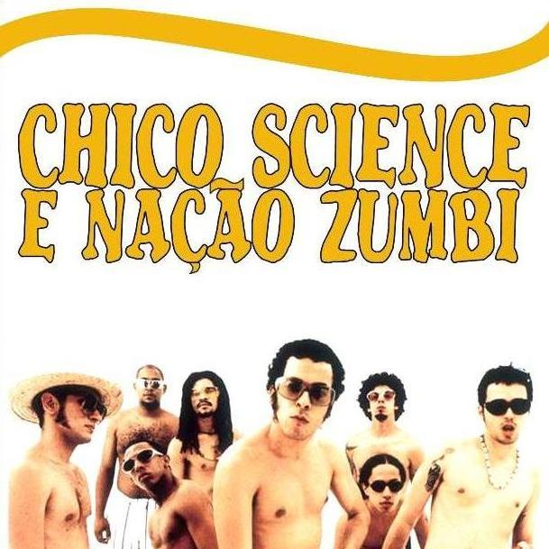
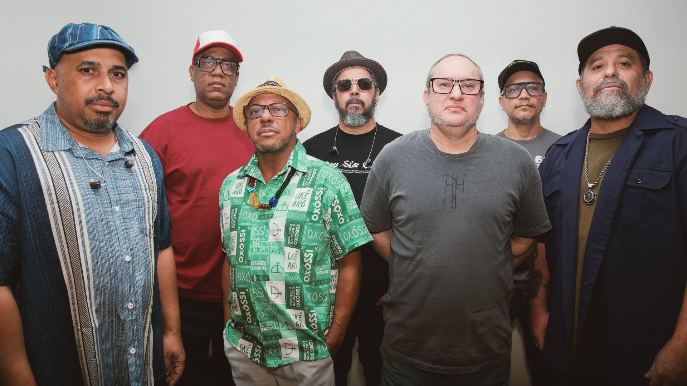

Contexto histórico
Nação Zumbi é uma banda formada na capital pernambucana no início da década de 1990. Nome fundamental do movimento manguebeat, a banda mistura diferentes ritmos nacionais e estrangeiros com elementos da cultura popular pernambucana, ampliando uma sonoridade baseada na experimentação.
O grupo surge do encontro, na cooperativa local de músicos, do bloco de samba-reggae Lamento Negro e da banda de rock pós-punk, Loustal, sendo formada originalmente por Chico Science (1966-1997), Lúcio Maia (1971), Dengue e os percussionistas Gira, Toca Ogan, Gilmar Bola 8, Jorge du Peixe (1967), Canhoto e Otto (1968). Eles passam a fazer shows conjuntamente até que, em 1993, com o nome Chico Science & Nação Zumbi e se destacam na primeira edição do festival pernambucano Abril Pro Rock, conhecido por revelar bandas nacionais.
Apesar de outros artistas como Lenine (1959), Lula Queiroga (1960) e Alceu Valença (1946) já terem buscado mesclar os elementos da cultura nordestina com a música pop, com Chico Science & Nação Zumbi essa fusão encontra maior alcance. A inovação da banda é a aglutinação dos gêneros internacionais dos anos 1980 como o rock, punk, funk, heavy metal e o rap com a inserção de manifestações da cultura de sua região. Eles mesclam, em seus arranjos, guitarras distorcidas com alfaias e uma instrumentação percussiva ressaltando ritmos como ciranda, coco, pastoril, maracatu de baque virado e baque solto, afoxé, caboclinho e cavalo marinho. Chico Science canta acentuando o sotaque pernambucano e utiliza parâmetros vocais da embolada, do rap e do raggae.
Em 1994 lançam o álbum de estreia Da Lama ao Caos (1994), pela gravadora Sony Music e produzido por Liminha (1951). Sua primeira composição a ganhar repercussão, "A Praieira" (Chico Science), é incluída na trilha sonora da novela Tropicaliente, da Rede Globo. Ainda deste disco são destaque as faixas "Da Lama ao Caos" (Chico Science) e "A Cidade" (Chico Science e Jorge dü Peixe). Este trabalho tem como particularidade a ausência de bateria, a presença marcante de alfaias e riffs de guitarra distorcida.


Em 1995 o grupo realiza sua primeira excursão no exterior com a participação no Festival de Montreaux. Também divide o palco com Gilberto Gil (1942), em show no Central Park na cidade de Nova York. No fim desta turnê Canhoto deixa o grupo, que então convida o baterista Pupillo. Neste momento, novas experiências do grupo culminam no disco Afrociberdelia (1996). Neste trabalho eles ampliam tanto o diálogo com a cultura eletrônica quanto com o Tropicalismo.
No início de 1997, Chico Science morre em decorrência de um acidente de carro na rodovia que liga a Recife à Olinda. No ano seguinte o grupo lança o álbum-tributo duplo intitulado CSNZ (1998) contendo cinco parcerias inéditas de Chico Science e participações especiais e ainda remixagens de sucessos da banda feitas por convidados, como o escocês David Byrne (1952) e o estadunidense Arto Lindsay (1953).
Em 2000 lançam Radio S.Amb.A - Serviço Ambulante da Afrociberdelia (2000) pela YB Music, marcando a nova fase com Jorge dü Peixe assumindo os vocais e a entrada de Marco Matias que o substitui na alfaia. Este disco marca uma transição e algumas transformações musicais, com a presença mais forte do rap e hardcore, são a aposta do grupo para esse novo momento. Do ponto de vista interpretativo há uma grande mudança, pois a característica marcante do canto de Chico Science é substituída pela voz limpa e mais grave de Jorge du Peixe. A sua forma de cantar mais próxima da fala reforça o diálogo com rap.
Nação Zumbi (2002) é lançado pela gravadora Trama com produção de Arto Lindsay. O disco autointitulado traz uma sonoridade mais pesada, com a bateria ainda mais em evidência em relação à percussão. Outros gêneros, como o heavy metal, se somam à psicodelia, além da referência da música caribenha e latina. Em 2003 voltam ao cinema, participando da trilha de Amarelo Manga (2003), de Cláudio Assis (1959) e no ano seguinte em Meu Tio Matou um Cara (2004), de Jorge Furtado, na música "Barato Total" (Gilberto Gil) junto com Gal Costa (1945-2022).
A banda continua sua trajetória com discos como Nação Zumbi, 2014 e Radiola NZ Volume 1, em 2017 que traz regravações de músicas brasileiras e internacionais mostrando ao público quais são as referências musicais que envolvem os integrantes do grupo e suas produções. Em 2024, uma série de shows comemora os 30 anos da gravação de Da Lama aos Caos, levando para o palco o disco na íntegra, homenagens a Chico Science e apresentações de Maracatu celebrando as referências e a mistura de sonoridades.
Nação Zumbi é uma das responsáveis pela difusão do rock brasileiro dos anos 1990. Em contraponto ao rock nacional da década anterior, que exaltava os aspectos musicais internacionais, o grupo é o catalisador de características multiculturais realizando uma síntese do rock, do folclore e da Música Popular Brasileira (MPB).